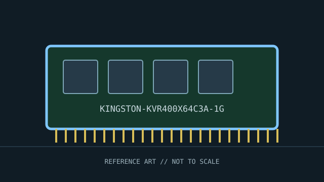

[ INDIVIDUAL COMPONENT // MEMORY / RAM ]
Kingston ValueRAM KVR400X64C3A/1G
Kingston ValueRAM DDR-400 desktop module. This record identifies a distinct product or standards-defined module class; specifications not verified for this exact identity are deliberately left open.

IDENTITY: Kingston ValueRAM KVR400X64C3A/1G is cataloged as kingston valueram ddr-400 desktop module. Standards entries describe a module class; named manufacturer entries describe one SKU. Do not treat them as interchangeable records.
Recorded specifications
| Catalog identity | Kingston ValueRAM KVR400X64C3A/1G |
|---|---|
| Record type | Kingston ValueRAM DDR-400 desktop module |
| Verified specifications | 1 GB DDR-400 / PC3200; 184-pin unbuffered non-ECC DIMM; CL3; 2.6 V per Kingston product data. Rank/organization is deliberately omitted here because it should be confirmed from the exact label revision and SPD. |
| Compatibility | Requires a motherboard supporting 184-pin DDR-400 UDIMMs and the module density. It is not compatible with SDR, DDR2, registered-DIMM, or SO-DIMM sockets. Maximum speed can be limited by the host. |
| Unverified/variable details | Only values supported by the cited standard or manufacturer source are stated. Confirm exact part number/revision, SPD, ranks, timings, and voltage on the specimen when not specified above. |
Platform compatibility and service
- Requires a motherboard supporting 184-pin DDR-400 UDIMMs and the module density. It is not compatible with SDR, DDR2, registered-DIMM, or SO-DIMM sockets. Maximum speed can be limited by the host.
- Before installation, record the full label, manufacturer, part number, revision/date code, contact condition, chip markings, and SPD contents where present.
- Use ESD precautions, handle the module by its edges, and never force it into a slot with different keying. Power down and follow the host’s service manual.
- For server/ECC modules, confirm CPU support, buffering type, channel population, supported ranks/densities, and firmware behavior; physical fit is not proof of ECC operation.
Archival and service notes
This is a specific Kingston part number, not the DDR-400 standard itself. Match the complete label and revision; preserve SPD output and manufacturer documentation with the specimen. Photograph both sides before cleaning; retain the host manual, SPD dump, test host, BIOS revision, and memory-test result with the catalog record.
Sources & further reading
- Kingston — KVR400X64C3A/1G product searchManufacturer product reference for capacity, data rate, timing, voltage, and unbuffered/non-ECC class.
- JEDEC — DDR SDRAM standardsStandards context; the module’s label/SPD and Kingston data identify this specific product.
Manufacturer source identifies the named SKU where provided; standards pages describe a generation or module class. A source-family page may not capture every revision. Check the precise specimen and platform service documentation.